← StationObject catalogue
All scene parts and what actually moves → · includes the inline geometry and an exact object list for each room.
65 named Blender asset families actually built across five rooms; 14 appear in more than one. One representative studio view per family, not a photograph of each placement. Counts include nested parts, so a stack and its constituent books are not independent scene placements. Inline architecture and live holograms are not counted here.
Exact family overlap
Atrium · 10 families
Assembly breakdown, inline objects and motion in this room
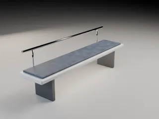
bench hall ×2Builder
blender/assets_tech.py:a_bench_hall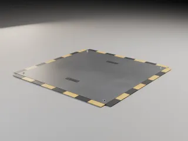
floorhatch ×2Also: FabricationBuilder
blender/assets_tech.py:a_floorhatch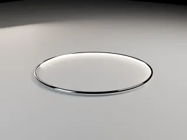
gimbal ring ×3Nested under orrery:3. Builder
blender/assets_projection.py:a_gimbal_ring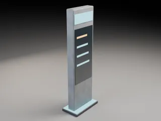
kiosk ×2Also: NavigationBuilder
blender/assets_tech.py:a_kiosk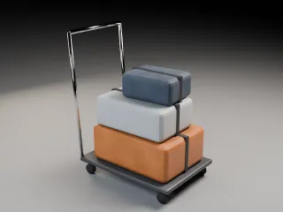
luggage ×2Builder
blender/assets_tech.py:a_luggage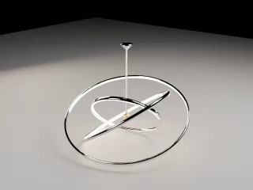
orrery ×1Builder
blender/assets_projection.py:a_orrery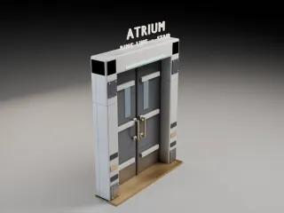
pressure door ×2Also: Observation Lounge, Fabrication, Navigation, LibraryBuilder
blender/build_scene.py:pressure_door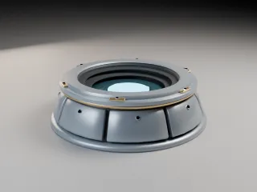
projector ×1Builder
blender/assets_projection.py:a_projector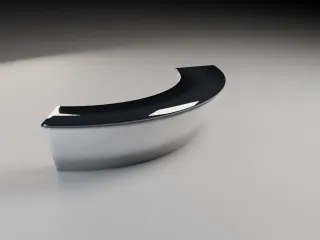
reception desk ×2Builder
blender/assets_projection.py:a_reception_desk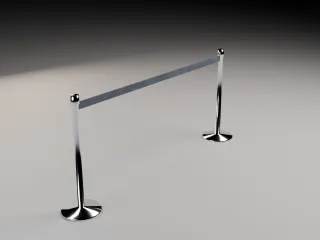
stanchion ×2Also: FabricationBuilder
blender/assets_tech.py:a_stanchion
Observation Lounge · 18 families
Assembly breakdown, inline objects and motion in this room
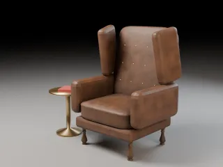
armchair ×2Also: LibraryBuilder
blender/assets_reading.py:a_armchair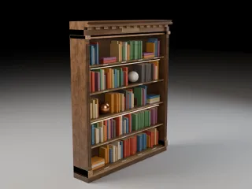
bay ×4Also: LibraryBuilder
blender/assets_reading.py:a_bay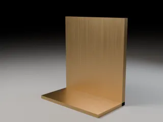
bookend ×8Nested under bay:8. Also: LibraryBuilder
blender/assets_reading.py:a_bookend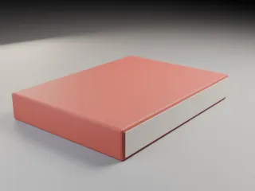
closed book ×9Nested under armchair:2, stack:7. Also: LibraryBuilder
blender/assets_reading.py:a_closed_book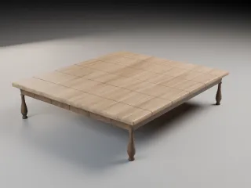
coffee table ×1Builder
blender/assets_lounge.py:a_coffee_table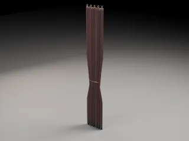
drape ×2Builder
blender/room_about.py:a_drape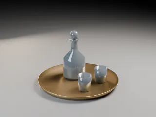
drinks ×2Builder
blender/room_about.py:a_drinks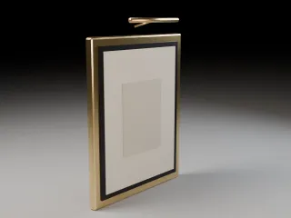
frame ×4Builder
blender/room_about.py:a_frame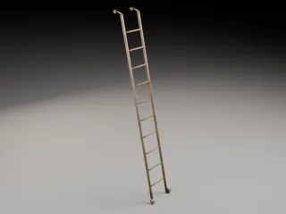
ladder ×1Also: LibraryBuilder
blender/assets_reading.py:a_ladder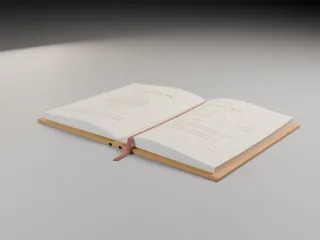
openbook ×1Also: LibraryBuilder
blender/assets_reading.py:a_openbookBuilder
blender/build_scene.py:pressure_door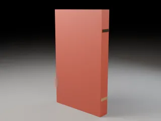
shelf volume ×973Nested under bay:973. Also: LibraryBuilder
blender/assets_reading.py:a_shelf_volume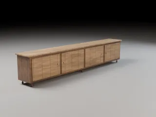
sideboard ×1Builder
blender/assets_lounge.py:a_sideboard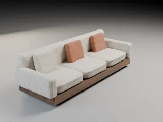
sofa body ×2Builder
blender/assets_lounge.py:a_sofa_body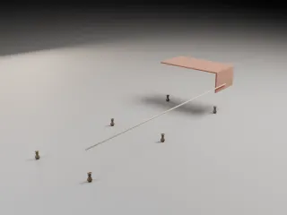
sofa trim ×2Builder
blender/room_about.py:a_sofa_trim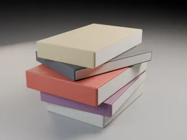
stack ×2Also: LibraryBuilder
blender/assets_reading.py:a_stack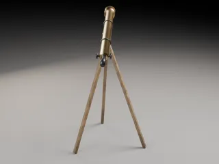
telescope ×1Builder
blender/assets_lounge.py:a_telescope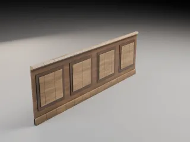
wainscot ×3Builder
blender/room_about.py:a_wainscot
Fabrication · 21 families
Assembly breakdown, inline objects and motion in this room
arm ×1Builder
blender/assets_exhibits.py:a_manipulator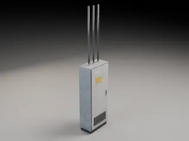
cabinet ×4Builder
blender/assets_tech.py:a_cabinet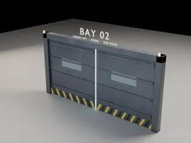
cargo bulkhead ×1Builder
blender/assets_exhibits.py:a_cargo_bulkhead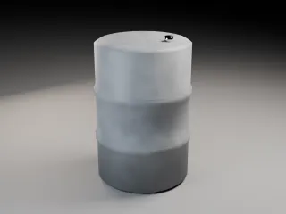
drum ×5Nested under pallet:2. Builder
blender/assets_tech.py:a_drum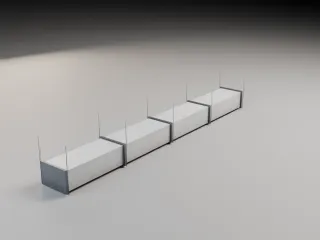
duct ×2Builder
blender/assets_tech.py:a_duct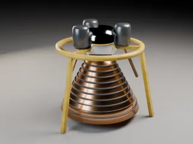
engine ×1Builder
blender/assets_exhibits.py:a_engine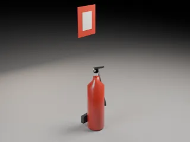
extinguisher ×8Also: NavigationBuilder
blender/assets_tech.py:a_extinguisherBuilder
blender/assets_tech.py:a_floorhatch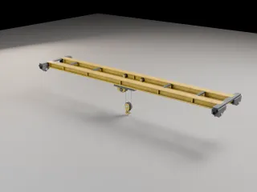
gantry ×1Builder
blender/assets_exhibits.py:a_gantry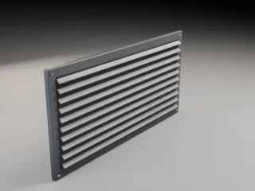
grille ×16Also: NavigationBuilder
blender/assets_tech.py:a_grille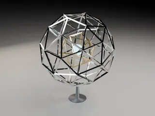
lattice ×1Builder
blender/assets_exhibits.py:a_lattice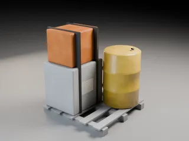
pallet ×2Builder
blender/assets_tech.py:a_pallet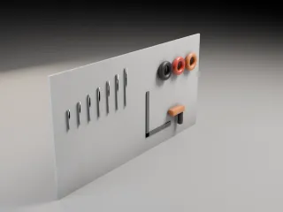
pegboard ×1Builder
blender/assets_tech.py:a_pegboard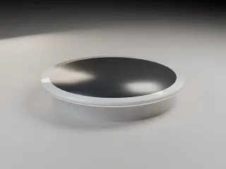
plinth ×4Builder
blender/assets_exhibits.py:a_plinthBuilder
blender/build_scene.py:pressure_door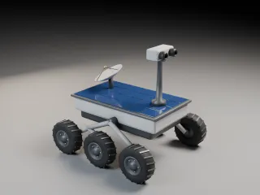
rover ×1Builder
blender/assets_exhibits.py:a_rover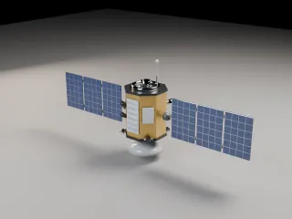
satellite ×1Builder
blender/assets_exhibits.py:a_satellite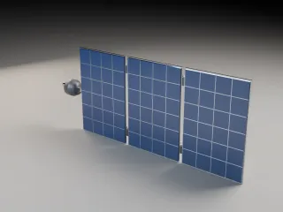
solar wing ×2Nested under satellite:2. Builder
blender/assets_exhibits.py:a_solar_wingBuilder
blender/assets_tech.py:a_stanchion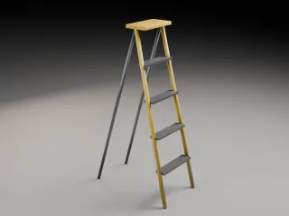
stepladder ×1Builder
blender/assets_tech.py:a_stepladder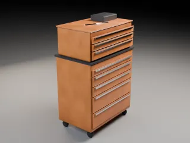
toolchest ×2Builder
blender/assets_tech.py:a_toolchest
Navigation · 9 families
Assembly breakdown, inline objects and motion in this room
console ×5Builder
blender/assets_tech.py:a_console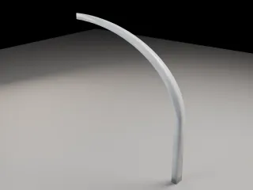
dome rib ×12Builder
blender/assets_projection.py:a_dome_ribBuilder
blender/assets_tech.py:a_extinguisherBuilder
blender/assets_tech.py:a_grilleBuilder
blender/assets_tech.py:a_kiosk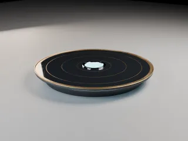
map table ×1Builder
blender/assets_projection.py:a_map_table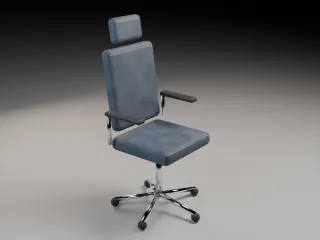
opchair ×5Builder
blender/assets_tech.py:a_opchairBuilder
blender/build_scene.py:pressure_door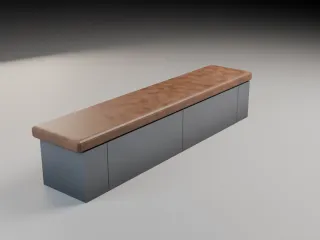
wall seat ×9Builder
blender/assets_projection.py:a_wall_seat
Library · 24 families
Assembly breakdown, inline objects and motion in this room
armchair ×1Also: Observation LoungeBuilder
blender/assets_reading.py:a_armchairBuilder
blender/assets_reading.py:a_bay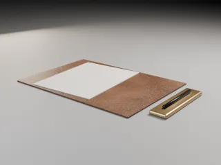
blotter ×3Builder
blender/room_writing.py:a_blotterBuilder
blender/assets_reading.py:a_bookend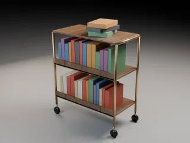
cart ×1Builder
blender/room_writing.py:a_cartBuilder
blender/room_writing.py:a_catalogueBuilder
blender/room_writing.py:a_chairBuilder
blender/assets_reading.py:a_closed_bookBuilder
blender/room_writing.py:a_cofferBuilder
blender/room_writing.py:a_cradleBuilder
blender/room_writing.py:a_endwallBuilder
blender/room_writing.py:a_floorlampBuilder
blender/room_writing.py:a_galleryBuilder
blender/room_writing.py:a_globeBuilder
blender/assets_reading.py:a_ladderBuilder
blender/room_writing.py:a_lampBuilder
blender/assets_reading.py:a_openbookBuilder
blender/room_writing.py:a_pendantBuilder
blender/build_scene.py:pressure_doorBuilder
blender/assets_reading.py:a_shelf_volumeBuilder
blender/assets_reading.py:a_stackBuilder
blender/room_writing.py:a_tableBuilder
blender/room_writing.py:a_terminalBuilder
blender/room_writing.py:a_window